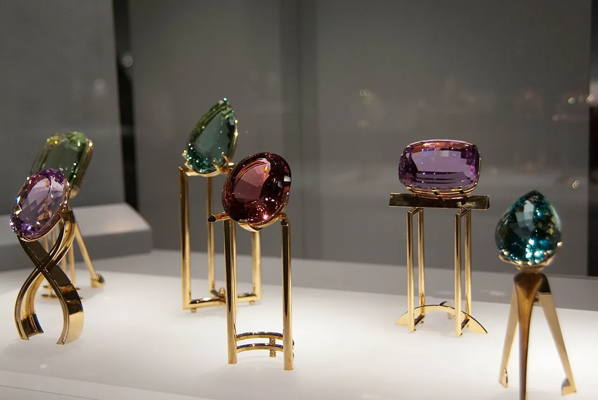
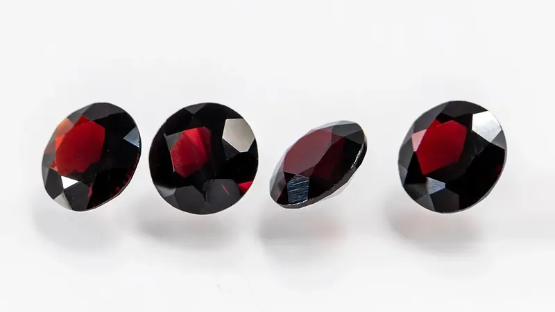
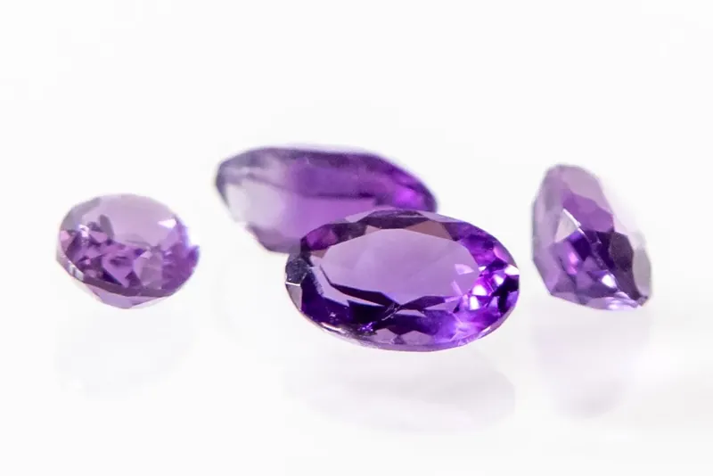
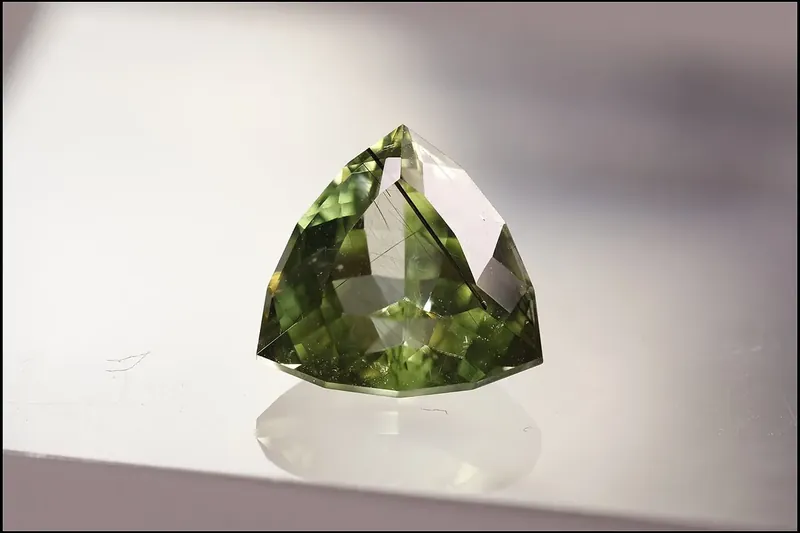

Birthday Guide
Birthstones by Month: The Complete Chart and How the List Was Made
Every month of the year has its own birthstone, and some months have two or three. Here is the full chart, from January's garnet to December's turquoise, zircon and tanzanite, with the UK list and the older traditional stones beside it, and the story of how the list was made.

Birthstone chart by month
The table shows the birthstones in the current American list (in bold), the British list, and the older stones used between the 15th and 20th centuries, as set out in Wikipedia's article on birthstones. Where a month has more than one stone, any of them counts as that month's birthstone.
| Month | US list (2019) | UK list (2013) | 15th–20th century |
|---|---|---|---|
| January | Garnet | Garnet | Garnet |
| February | Amethyst | Amethyst | Amethyst, hyacinth, pearl |
| March | Aquamarine, bloodstone | Aquamarine, bloodstone | Bloodstone, jasper |
| April | Diamond | Diamond, rock crystal | Diamond, sapphire |
| May | Emerald | Emerald, chrysoprase | Emerald, agate |
| June | Pearl, moonstone, alexandrite | Pearl, moonstone | Cat's eye, turquoise, agate |
| July | Ruby | Ruby, carnelian | Turquoise, onyx |
| August | Peridot, spinel, sardonyx | Peridot, sardonyx | Sardonyx, carnelian, moonstone, topaz |
| September | Sapphire | Sapphire, lapis lazuli | Chrysolite |
| October | Opal, tourmaline | Opal | Opal, aquamarine |
| November | Topaz, citrine | Topaz, citrine | Topaz, pearl |
| December | Turquoise, zircon, tanzanite | Tanzanite, turquoise | Bloodstone, ruby |
In the American list, six months have more than one birthstone: March, June, August, October, November and December. December has the most choice, with turquoise, zircon and tanzanite.



Where birthstones came from
The idea goes back to the Bible's description of the breastplate of Aaron, the high priest, set with twelve stones. In the first century the historian Josephus, Wikipedia explains, believed there was a connection between those twelve stones and “the twelve months of the year, and the twelve signs of the zodiac.”
Wearing one stone for your own birth month is much newer, “only a few centuries old”, and experts disagree on where it began. The gem scholar George Frederick Kunz, in his 1913 book The Curious Lore of Precious Stones, placed the custom in 18th-century Poland; the Gemological Institute of America traces it to Germany in the 1560s.
How the modern list was decided
For centuries the stones varied from place to place. To standardise them, American jewellers met in Kansas City in August 1912 and adopted an official list. National Jeweler names the group as the American National Retail Jewelers Association, today's Jewelers of America.
- 1912: the first official American list.
- 1937: Britain's National Association of Goldsmiths creates its own standard list.
- 1952: an update adds alexandrite, citrine, tourmaline and zircon, according to National Jeweler.
- 2002: the American Gem Trade Association adds tanzanite for December.
- 2016: Jewelers of America and the American Gem Trade Association add spinel for August, announced in June that year.
- 2021: Japanese industry associations add ten new birthstones to Japan's list, Wikipedia notes.
So the answer to “what is my birthstone?” can depend on where you live: the American and British lists agree on most months but not all, as the chart above shows.
Birthstones in Asia
Asian traditions have their own links between gems and birth. Hinduism, Wikipedia notes, recognises nine gemstones connected with the nine celestial bodies of the Navagraha, known in Sanskrit as the Navaratna, the nine gems. They follow astrology rather than the twelve months, so they are a different system from the birthstone chart above.
Your birthstone and your Chinese zodiac sign
Your birthstone and your Chinese zodiac animal answer different questions. The birthstone follows your birth month in the Western calendar. The zodiac animal follows your birth year, counted from Chinese New Year, which falls between 21 January and 20 February.
That is why someone born in January can have garnet as a birthstone and still belong to the previous zodiac year. Find your animal, element and lucky signs with our zodiac checker, or read what your Chinese zodiac is if you were born in January.
Frequently asked questions
What is the birthstone for each month?
In the current American list: January garnet; February amethyst; March aquamarine or bloodstone; April diamond; May emerald; June pearl, moonstone or alexandrite; July ruby; August peridot, spinel or sardonyx; September sapphire; October opal or tourmaline; November topaz or citrine; December turquoise, zircon or tanzanite.
Which months have more than one birthstone?
In the American list, March, June, August, October, November and December each have two or three birthstones. Any of them counts as that month's stone.
Who decides the birthstones?
Jewellers' associations. The American list was adopted by jewellers meeting in Kansas City in 1912 and has been updated since, most recently in 2016. Britain's National Association of Goldsmiths made its own list in 1937.
When was spinel added as a birthstone?
In 2016, when Jewelers of America and the American Gem Trade Association added spinel as a birthstone for August.
Is my birthstone linked to my Chinese zodiac sign?
No. The birthstone follows your birth month; the Chinese zodiac animal follows your birth year, which starts at Chinese New Year. You can check your animal with our zodiac checker.
Sources and further reading
- Wikipedia: “Birthstone” — the US, UK and 15th–20th-century lists, Josephus and the breastplate, Kunz and the GIA on the origin of the custom, the 1912, 1937, 1952, 2002 and 2016 changes, Japan's 2021 additions and the Navaratna.
- National Jeweler: “JA, AGTA add spinel as August birthstone” (2 June 2016) — the 2016 addition of spinel, the 1912 list by the American National Retail Jewelers Association (now Jewelers of America), and the 1952 and 2002 updates.
Birthstone lists follow the sources above; jewellers and countries sometimes differ. Photos are from Wikimedia Commons under the free licences named under each picture.
Explore more: Born in January? · How to calculate your zodiac sign · Year of the Goat, Sheep or Ram? · Find your zodiac sign
← Back to the MyBirthSign Blog